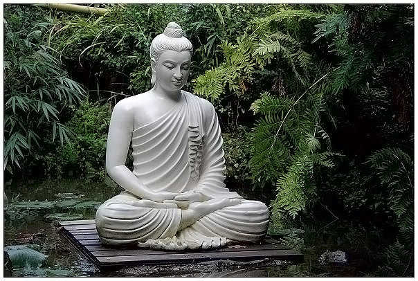

В древнеиндийской философии выделяют три основных этапа:
1)Ведический — первая половина I тыс. до н.э. (время разложения первобытнообщинного строя, возникновения раннеклассовых рабовладельческих обществ);
2)Эпический — вторая половина I тыс. до н.э. (время закрепления системы хозяйственных, политических, нравственных и т.п. связей и отношений в форме варно-кастового деления общества);
3)Классический — с первого тыс. н.э. и вплоть до XVII-XVIII вв. (возникновение и развитие феодализма на основе сословно-классовой социальной структуры).
Источники ведического периода — обширные и многослойные тексты Вед (II-I тыс. до н.э.), записанные на языке ариев — ведическом санскрите. Поскольку ведическая литература оформлялась на протяжении почти тысячелетия, то она отразила различные стадии развития мировоззрения древнеиндийского общества — от мифологического до предфилософского и философского. В целом Веды представляли собой священные тексты — шрути, которые были результатом откровения мудрецов — риши и выражали идеологию брахманизма, а затем — индуизма. Ведический комплекс составляют: собственно Веды или самхиты — сборники гимнов в честь богов (Ригведа и Самаведа), жертвенных формул, изречений, магических заклинаний и заговоров на все случаи жизни (Яджурведа и Атхарваведа).
В эпический период философия в Индии постепенно превращается в особую отрасль знания, специальную науку. Об этом в частности свидетельствует памятник III в до н.э. «Артхашастра»: «Философия всегда считается светильником все наук, средством для совершения всякого дела, опорой всех установлений» Автор «Артхашастры» (Каутилья) употребляет для философии даже специальный термин - «анвикшики-тарка-видьям» («рационально-логическое-знание») в отличие от религиозного учения, обозначаемого понятием «трайи-видья» (знание трех», т.е. – трех ведических текстов – Ригведы, Самаведы и Яджуверды).
В классическом периоде эпоха перехода от родового общества к раннеклассовому и классовому растянулась на многие века. Поэтому кризис родовой идеологии, сопровождавший становление новой общественной организации, был исходным пунктом постоянной творческой реконструкции сакрально-мифологических элементов родового мировоззрения. В преобразованном виде они выступали предельными основаниями всей последующей культуры древней Индии.
Согласно традиционным принципам классификации, принятым большинством индийских мыслителей, школы и системы индийской философии разделяются на два обширных лагеря — ортодоксальные (астика) и неортодоксальные (настика).
К первой группе принадлежат шесть главных философских систем: миманса, веданта, санкхья, йога, ньяя и вайшешика. Они считаются ортодоксальными не потому, что допускают наличие бога, а потому, что признают авторитет вед.К числу неортодоксальных систем относятся главным образом три основные школы — материалистическая (типа чарвака), буддийская (вайбхашика, саутрантика, йогочара и мадьямака) и джайнская. Их называют неортодоксальными потому, что они не признают авторитета вед.
1.Система чарвака.
В индийской философии слово «чарвака» означает материалист. Достоверным источником познания последователи системы чарвака считают только восприятие. Они указывают, что все непрямые, находящиеся вне процесса восприятия, источники познания, такие, как вывод, свидетельство других лиц и т. д., ненадежны и часто вводят в заблуждение. Поэтому мы не должны верить ничему, кроме того, что мы познаем непосредственно через восприятие. Последователи чарваки полагают, что продолжение существования человека в какой-либо форме после его смерти бездоказательно. Существование бога также является мифом. Бога нельзя воспринимать с помощью наших органов чувств. Мир есть не божественное создание, а произвольная комбинация материальных элементов. Глупо поэтому выполнять какие бы то ни было религиозные обряды ради некоего посмертного наслаждения счастьем на небе или ради желания угодить богу. Не следует верить писаниям вед и коварным жрецам, которые, пользуясь доверчивостью людей, зарабатывают себе средства на жизнь. Поэтому основной целью жизни разумного человека должно быть наслаждение наибольшим количеством удовольствий здесь, в этой жизни, в существовании которой мы только и уверены. Глупо воздерживаться от удовольствий в жизни просто потому, что иногда они случайно смешиваются со страданием. Мы должны стараться извлечь из этой жизни все самое лучшее, как можно больше наслаждаясь ею и избегая, насколько возможно, случайных страданий.
2.Философская система джайнизма.
Приверженцы системы джайнизма отвергают точку зрения чарваков, считающих восприятие единственно достоверным источником познания. Кроме восприятия, джайнисты допускают в качестве источников достоверного познания логические выводы и свидетельства. Достоверное знание через посредство выводов мы получаем тогда, когда они подчиняются логическим законам определенности. Свидетельство же является достоверным в том случае, когда оно представляет собой сообщение, исходящее от надежного авторитета. На основе этих трех источников познания система джайнизма строит свое понимание вселенной. Восприятие раскрывает реальность материальных субстанций, состоящих из четырех разных элементов, таких же, какие фигурируют и в системе чарвака. Путем выводов философы джайнской школы приходят к убеждению о наличии пространства (акаша), поскольку материальные субстанции должны где-то существовать, и о наличии времени (кала), поскольку изменения, то есть последовательный ряд состояний субстанции, не могут быть поняты без него. Они убеждены также в том, что существуют причины движения и покоя, ибо без них невозможно объяснить движение и прекращение движения в вещах. Эти причины, называемые «дхарма и адхарма», следует понимать не в их обычном моральном смысле, а в техническом смысле причин движения и покоя. Джайнисты не верят в бога. Место бога у них занимают тиртханкары, которым и принадлежат такие божественные силы, как всеведение и всемогущество. Им поклоняются как своему идеалу.
3.Буддийская система.
Буддийская система философии выросла из учения Гаутамы Будды, хорошо известного основателя буддизма. Чувство скорби при виде болезней, старости, смерти и других несчастий, которым подвержен человек, пробудило сознание Гаутамы. Многие годы он учится, ведет аскетический образ жизни и думает о происхождении человеческих страданий, ища средства для их преодоления. Наконец на него нисходит просветление, результат которого был изложен им в форме, которая стала известной под названием «четырех благородных истин». Это истина о том, что есть страдание; истина о том, что есть причина страдания; истина о том, что есть прекращение страдания, и истина о том, что есть путь, ведущий к прекращению страдания.
Первая истина о наличии страданий имеется в той или иной форме во всех философских системах Индии. Однако Будда видел, что страдание не просто является чем-то случайным; оно существует повсеместно, во всех формах жизни и во всех видах опыта. Даже то, что кажется удовольствием, в действительности является источником страдания. Что касается второй истины, то она выведена Буддой из анализа причинности. Он отмечает, что существование любого явления в этом мире - материального или психического - причинно обусловлено некоторой другой вещью. Нет ничего, что было бы ни с чем не связано и существовало бы совершенно самостоятельно. Поэтому ничего постоянного в этом мире нет. Все вещи подвержены изменению. Наши страдания также вызываются определенными условиями. Страдания зависят от рождения в этом мире. Рождение, в свою очередь, вызвано нашим пристрастием (тришна) ко всему земному. Поскольку страдание, как и все другое, зависит от определенных условий, оно должно прекратиться, коль скоро будут устранены эти условия. Это третья истина — о прекращении страдания. Четвертая истина, - относительно пути, ведущего к прекращению страдания, сводится к контролю над условиями, причиняющими страдание. Этот путь известен как восьмеричный благородный путь, так как он состоит из восьми ступеней — правильной точки зрения, правильного определения, правильной речи, правильного поведения, правильной жизни, правильных стараний, правильной внимательности и правильной сосредоточенности. Эти восемь ступеней уничтожают незнание и пристрастия, просветляют ум и тем самым порождают совершенную невозмутимость и спокойствие.
Учение Будды заключается в охарактеризованных выше четырех благородных истинах. Позднее зародыши философских теорий, содержавшиеся в учении Будды, были развиты его последователями в Индии и вне ее; таким образом, возник ряд буддийских школ. В индийской философии наиболее известными из них являются следующие четыре школы:
Школа мадхьямаков, или шуньявадинов, считает, что мир нереален (шунья); все феномены, как духовные, так и не духовные, иллюзорны. Это мировоззрение получило название нигилизма (шуньявада).
Школа йогачаров, или виджнянавадинов, также придерживается того взгляда, что внешние объекты нереальны. То, что представляется нам внешним, на самом деле только идеи нашего ума. Но ум должен быть признан реальным. Утверждение, что ум нереален, противоречит самому себе, так как уже самая мысль, что ум нереален, сама себя опровергает, поскольку мысли есть не что иное, как проявление деятельности ума. Это мировоззрение получило название субъективного идеализма (виджнянавада).
Школа саутрантиков считает, что оба мира, как духовный, так и недуховный, действительно существуют. Если бы все, что мы воспринимаем извне, было нереальным, то наше восприятие объектов зависело бы не от чего-либо, находящегося вне ума, а лишь от самого ума. Однако мы знаем, что ум не в состоянии воспринимать любой объект (например, тигра) в том месте, в каком бы он пожелал. Это доказывает, что идея о тигре, в тот момент, когда мы воспринимаем его, зависит от недуховной реальности - от самого тигра. Исходя из этой идеи, или представления тигра, мы можем прийти к заключению о существовании причины данного представления – тигра - вне нашего ума. Следовательно, о внешних объектах можно судить как о существующих вне ума. Это мировоззрение может быть названо репрезентационизмом, или теорией подразумеваемости внешних объектов.
Школа вайбхашиков согласна с предыдущей в вопросе о реальности как внутренних, так и внешних объектов. Однако она придерживается иных взглядов на способы познания внешних объектов. По мнению вайбхашиков, внешние объекты воспринимаются непосредственно, а не выводятся из их идей или представлений, порождаемых нашим умом, потому что исходя из той или иной идеи было бы невозможно прийти к заключению о существовании внешнего объекта, если бы внешний объект не был воспринимаем в соответствии с идеей. Эта точка зрения может быть названа непосредственным реализмом, поскольку, согласно ей, внешние объекты воспринимаются непосредственно.
Ортодоксальные.
1)Система ньяйи.
Система ньяйи создана великим мудрецом Готамой. Это реалистическая философия, основывающаяся главным образом на законах логики. Она признает наличие четырех самостоятельных источников истинного познания: восприятия (пратьякша), вывода, или заключения (анумана прамана), сравнения (упамана прамана) и свидетельства, или доказательства (шабда).
2)Система вайшешики.
Система вайшешики была основана мудрецом Канадой, настоящее имя которого было Улука. Она родственна системе ньяйи и имеет одинаковую с ней конечную цель - освобождение индивидуального я. Она подводит все объекты познания, весь мир, под семь категорий: субстанция (дравья), качество (гуна), действие (карма), всеобщность (саманья), особенность (вишеша), присущность (самавая) и небытие (абхава).
3)Система санкхьи.
Санкхья представляет собой философию дуалистического реализма, создание которой приписывается мудрецу Капиле. Она признает наличие двух независимых друг от друга первичных реальностей: пуруши и пракрити. Пуруша есть некое разумное начало, у которого сознание (чайтанья) является не атрибутом, а самой его сущностью. Пуруша - это Я» совершенно отличное от тела, чувств и ума. Находясь вне мира объектов, оно представляет собой вечное сознание, являющееся свидетелем происходящих в мире изменений и действий, - сознание не действующее и не изменяющееся.
4)Система йоги.
Основателем философии йоги считается мудрец Патанджали. Йога близко примыкает к санкхье. Система йоги разделяет теорию познания и метафизику санкхьи с ее двадцатью пятью началами, но к тому же признает бытие бога. Особый интерес эта система представляет ввиду своеобразного характера практики йоги — средства достижения вивека-джняна, то есть способности распознавать истинное значение, которое (как это признается и системой санкхьи) должно быть существенно важным условием освобождения. Согласно этой системе, йога означает прекращение всех функций ума-читты.
5)Система мимансы.
Миманса была основана Джаймини. Ее целью являлась защита и оправдание ведийского ритуализма. Учение Вед здесь тесно связывается с дхармой – идеей долга, исполнение которого предполагает прежде всего жертвоприношение. Это выполнение своего долга и ведет к постепенному искуплению от кармы и к освобождению как прекращению перерождений и страданий. Создатели философии мимансы, как и представители школы джайнизма верят в существование бессмертной души, опровергая точку зрения материалистов, не допускающих наличия чего-либо, кроме тела.
6)Система веданты.
Веданта — важнейшая среди ортодоксальных школ древнеиндийской философии. Она так прочно укоренена в индийскую культуру, что именно с ней связывают особенности, характер и направление развития всей индийской философской мысли. (один из Брахманов)
Центральная идея Веданты — идея Брахмана. Брахман раскрывается как безличный абсолютный дух, генетическое и субстанциональное начало, равно как и завершающий конец всего сущего. Из него все вещи происходят, им они поддерживаются и в нем растворяются. Нет ничего подобного ему и ничего отличного от него. Учение о Брахмане как безликой Реальности дополняется в веданте учением об Атмане как индивидуально-психическом бытии, душе, человеческой самости. В силу своей сущностной тождественности Брахману Атман универсален, непреходящ, сверхчувственен. Он открывается во внутреннем опыте человека, независимом от внешних ощущений, через некое сокровенное, потаенное чувство ума. Как эмпирическое, или проявленное, бытие Брахмана Атман внутренне присущ каждому индивиду — как его жизненное дыхание. Постижение субстанциального единства Брахмана и Атмана освобождает человека от оков нескончаемого круговорота жизни, делает его просветленным, подлинным, свободным. Веданта была и остается ведущей духовной традицией Индии, так или иначе сказывающейся на мировоззренческо-методологических координатах ее современных философских дискурсов.